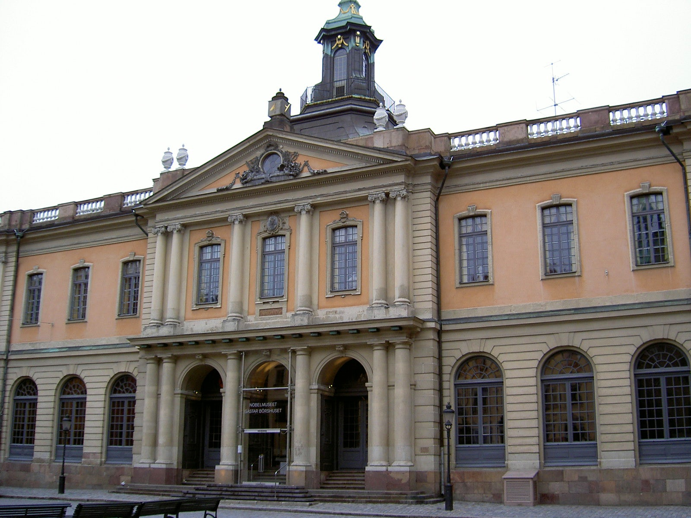

Ahli kimia dan penemu kelahiran Swedia Alfred Bernhard Nobel adalah apa yang kita sebut sekarang "gila kerja," yang menyisakan sedikit waktu untuk kehidupan pribadi. Dia menghabiskan sebagian besar hidupnya bepergian dan bekerja. Pada saat ia meninggal pada tahun 1896, Nobel telah belajar beberapa bahasa dan memiliki 355 paten.
Menurut Museum Nobel di Stockholm, Nobel terdekat yang pernah memiliki seorang istri adalah ketika ia berusia 43 tahun. Dia memasang iklan berikut di surat kabar: "Pria tua yang berpendidikan tinggi mencari wanita yang sudah matang, berpengalaman dalam bahasa, sebagai sekretaris dan pengawas rumah tangga."

Kandidat yang paling memenuhi syarat adalah seorang wanita Austria bernama Countess Bertha Kinsky. Dia bekerja untuk Nobel selama dua tahun mulai tahun 1876 sebelum kembali ke Austria untuk menikah dengan Pangeran Arthur von Suttner. Meskipun demikian, Nobel dan Bertha von Suttner tetap berteman baik dan berkorespondensi secara teratur. Seiring berjalannya waktu von Suttner menjadi semakin kritis terhadap perlombaan senjata dan pada tahun 1899 menerbitkan apa yang akan menjadi buku klasik dalam gerakan perdamaian, Die Waffen nieder (Lay Down Your Arms).

Tidak diragukan lagi, hubungan ini memengaruhi Nobel ketika ia menulis surat wasiat terakhirnya yang menetapkan penghargaan tahunan, yang disebut Hadiah Nobel, untuk pekerjaan dalam fisika, kimia, fisiologi atau kedokteran, dan sastra, dan menuju promosi perdamaian internasional. Bertha von Suttner dianugerahi Hadiah Nobel untuk Perdamaian pada tahun 1905.